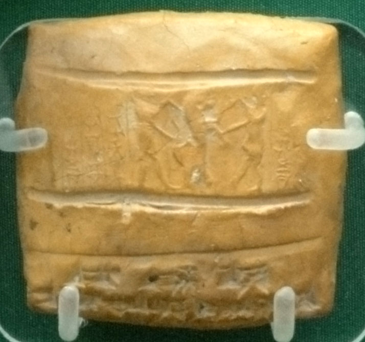

Alalakh Tablets

- Find Name
- Alalakh Tablets
- Historical Period
- Late Bronze Age
- Artifact Date
- c. 18th–13th centuries BC (archive)
- Date Discovered
- 1936–1949 (excavated)
- Discovery Location
- Tell Atchana (Alalakh), Turkey
- Current Location
- British Museum, London; Hatay Archaeology Museum, Turkey
- Timeline Era
- Primeval / Patriarchs
- Description
- A Late Bronze Age archive of several hundred tablets from the palace at Alalakh, excavated by Leonard Woolley. Like the Mari and Nuzi tablets, they record adoptions, marriages, debts, and inheritance disputes — the legal customs of the world the patriarchs inhabited.
- Biblical Significance
- Alalakh belongs with Mari and Nuzi in showing that the customs behind Genesis — household gods as inheritance tokens, a barren wife's maid as surrogate, a servant as heir — were ordinary law in the ancient Near East, not inventions of a later storyteller.
- Evidence Class
- Contextual
- Interpretations
- Scholars agree the tablets are a Late Bronze palace archive; their value for Genesis is as cultural background, in the same way as the Mari and Nuzi archives, not as direct records of the patriarchs.
- Scripture Illuminated
- Related Books
Awaiting Review Not yet checked against scholarly sources. Treat its claims as provisional until this entry is reviewed. About verification
Last reviewed: not yet reviewed